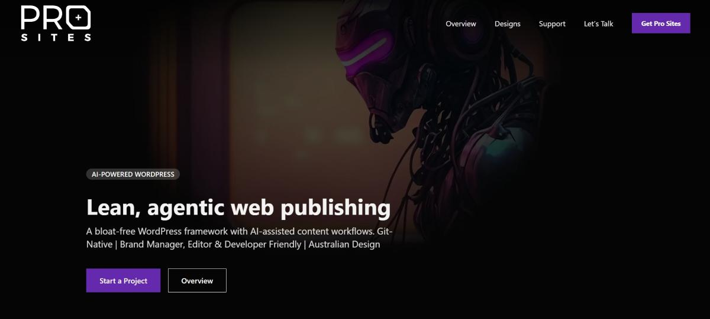

Pro Sites
Developed and customised a WordPress website based on an existing custom theme and custom plugin architecture, leveraging Advanced Custom Fields (ACF) for flexible and dynamic content management. Extended the site’s functionality and built custom content structures based on client requirements, while handling theme customisation, front-end development, responsive layouts, and ongoing feature enhancements.